Home / Photo gallery GEARBOX PHOTOGRAPHS
Gearbox Repair & Rebuilding Photo Gallery Explore 33 photographs of gearbox components, opened housings and assembly stages, supplied in the Gear Services photo guide. The collection includes several equipment examples, not one continuous repair job.
Select any photo to view a larger image.
Teardown and inspection examples Gear and shaft components Components through gearbox assembly Additional gearbox examples Teardown and inspection examples Opened housings, exposed gearing and condition details. These are separate examples; a shared repair job has not been confirmed.
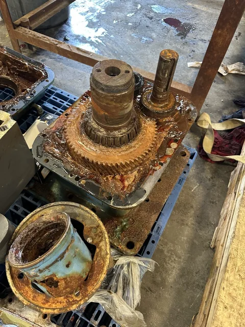
01 / Opened gearbox Exposed gear assembly with visible corrosion; removed housing components sit alongside. 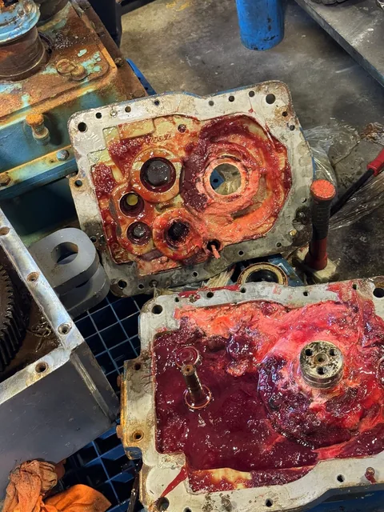
02 / Removed housing sections Gearbox housing sections with bearing openings, deposits and discolored interior surfaces. 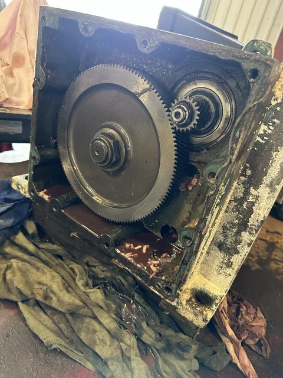
03 / Gear train exposed Open gearbox showing internal gears, shaft ends and bearing locations. 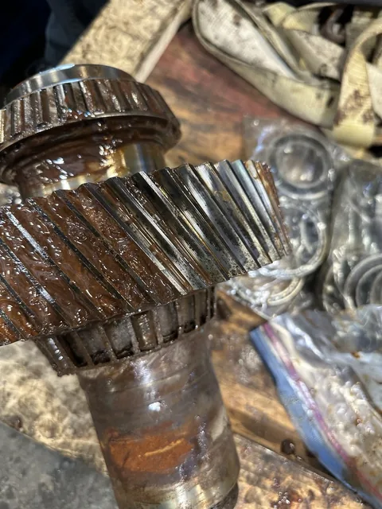
04 / Removed pinion assembly Helical pinion and bearing assembly with visible corrosion and surface deposits. 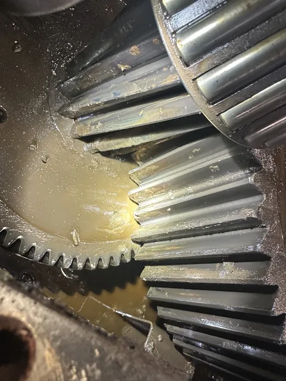
05 / Bevel gear inspection view Close-up of meshing bevel gears with lubricant visible in the housing. 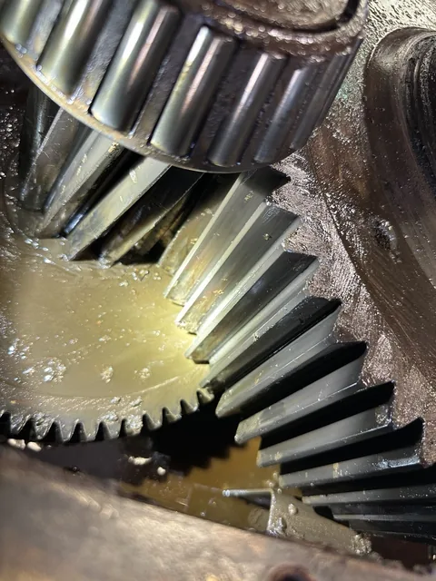
06 / Bevel gear detail Alternate view of the bevel gear teeth and contact area. Gear and shaft components Separate component views showing helical gears, shafts and protective mesh. The photographs do not establish manufacturing methods or specifications.
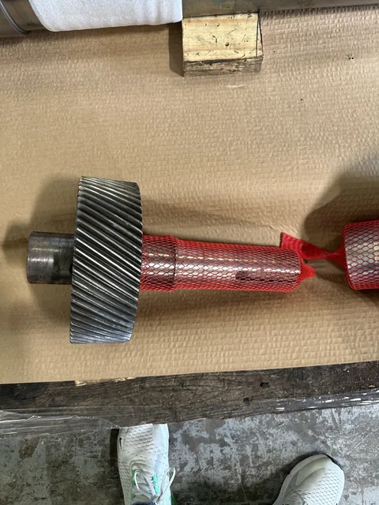
07 / Protected gear-and-shaft component Helical gear-and-shaft component with protective mesh covering part of the shaft. 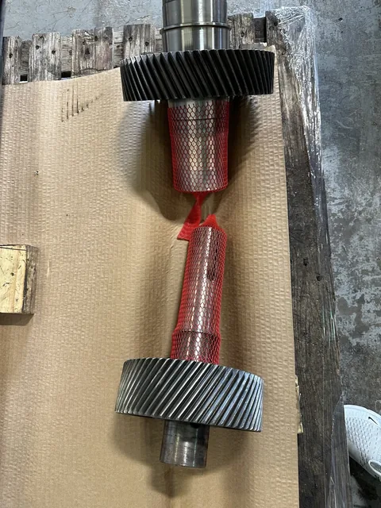
08 / Paired gear-and-shaft components Two helical gear-and-shaft components laid out with protective mesh. 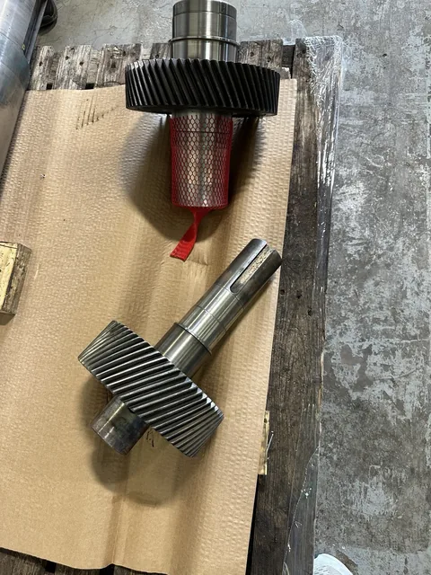
09 / Machined shaft surfaces Alternate view of the two components showing shaft shoulders and machined surfaces. Components through gearbox assembly A visual sequence of components and assembly stages. Exact job chronology, repair methods and test results are not established by these photographs.
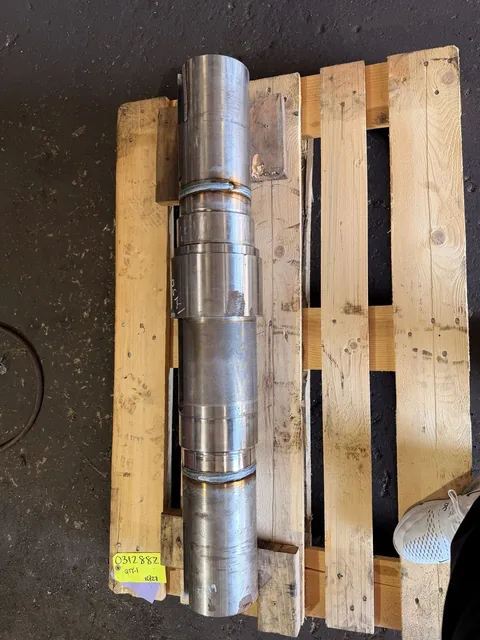
10 / Stepped shaft Shaft laid on a pallet, showing bright journal surfaces and a darker central area. 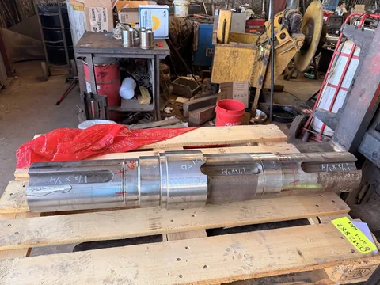
11 / Shaft journal detail Alternate view of the stepped shaft and its bearing-seat surfaces. 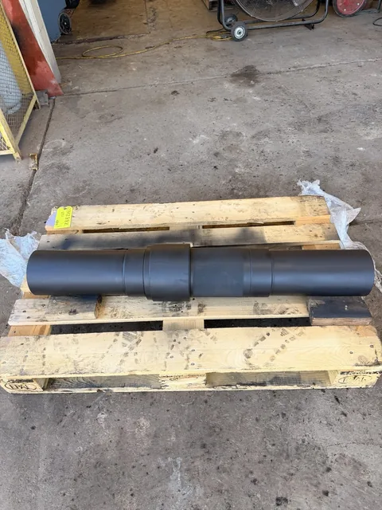
12 / Dark-finished shaft Stepped shaft with a dark surface finish on a pallet; finish type is not identified. 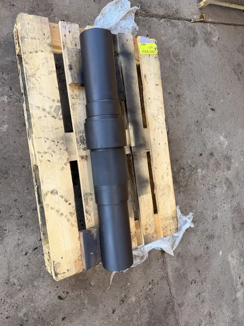
13 / Alternate shaft view Second view of the dark-finished shaft and its stepped geometry. 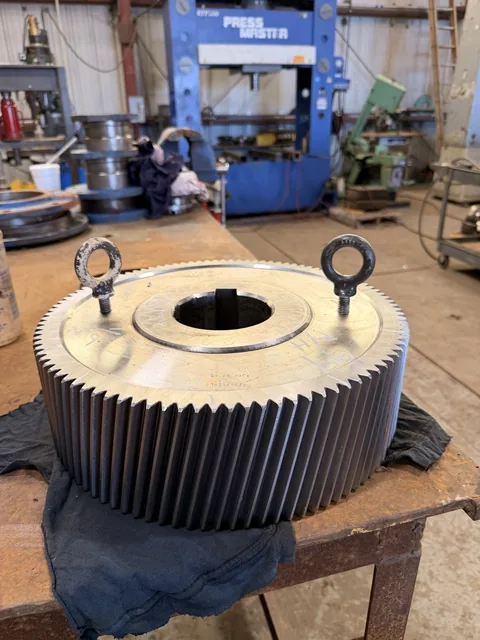
14 / Large helical gear Large helical gear on a workbench with lifting eyes installed. 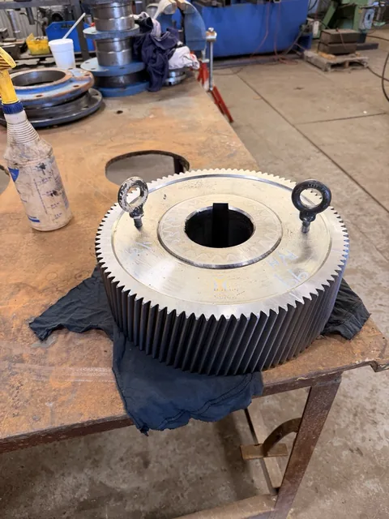
15 / Gear bore and face Alternate view of the large helical gear showing its center bore and face. 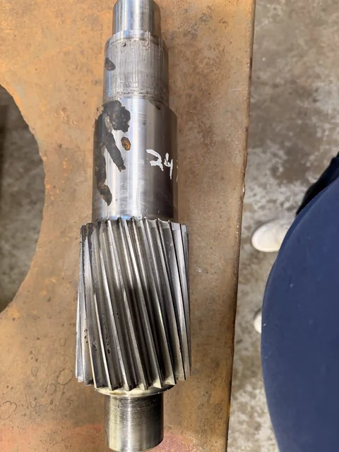
16 / Helical pinion shaft Close-up of pinion teeth and adjacent shaft surfaces. 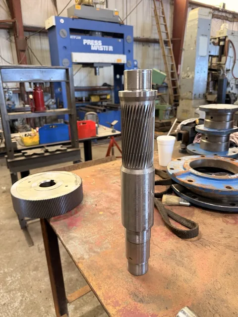
17 / Long pinion shaft Long helical pinion shaft standing upright on the workbench. 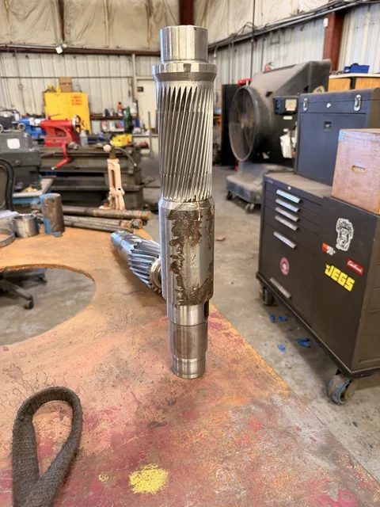
18 / Pinion shaft alternate view Second upright view of the pinion shaft and its shoulders. 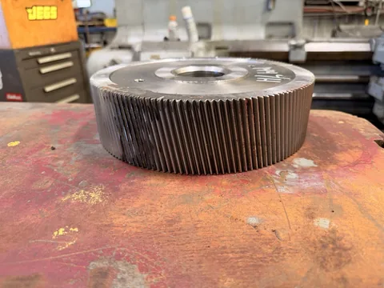
19 / Separate helical gear Helical gear on the workbench showing its tooth face and machined hub. 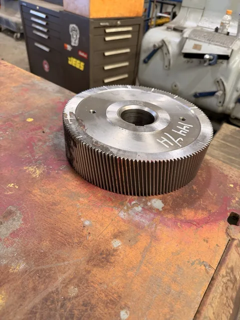
20 / Helical gear alternate view Alternate view of the gear face and center bore. 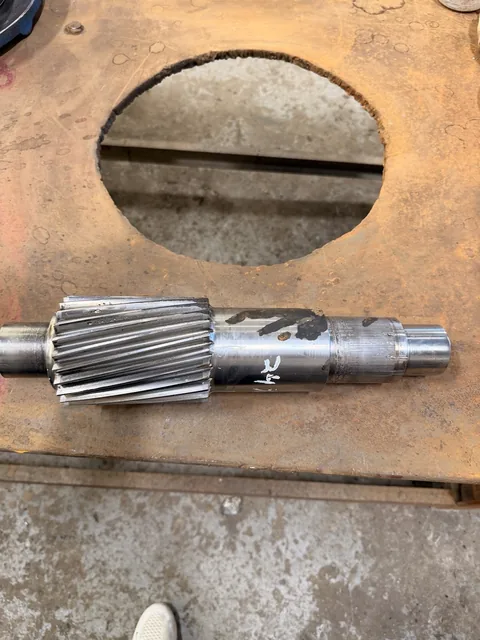
21 / Pinion laid out for assembly Helical pinion shaft lying horizontally on the workbench. 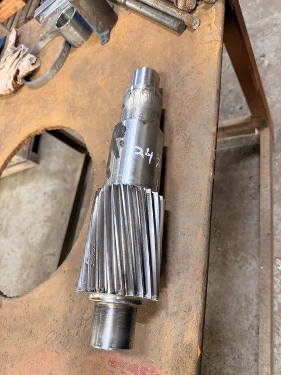
22 / Pinion teeth and shoulders Closer view of the pinion teeth and stepped shaft surfaces. 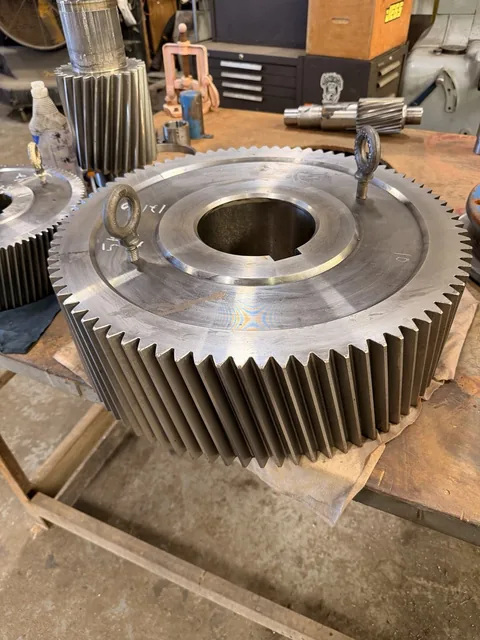
23 / Large gear ready for handling Large helical gear with lifting eyes; a pinion shaft is visible in the background. 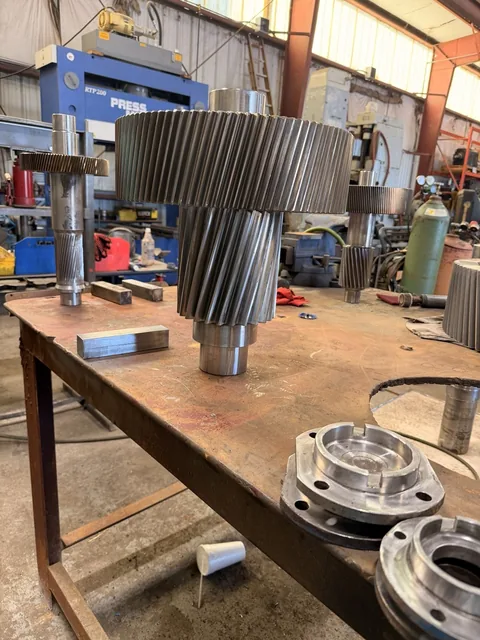
24 / Compound gear assembly Gear-and-pinion assembly standing on the workbench. 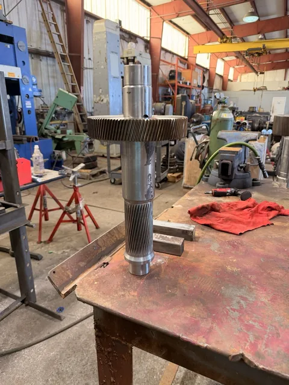
25 / Gear and pinion on shaft Long shaft carrying a large helical gear and a smaller pinion section. 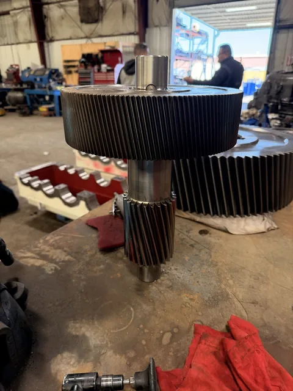
26 / Compound assembly alternate view Alternate view of a large helical gear and smaller pinion on one assembly. 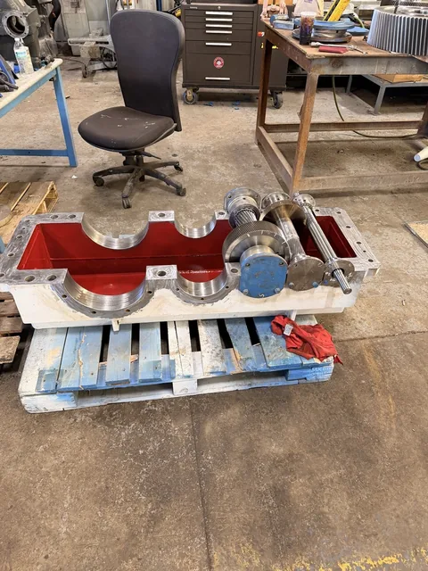
27 / Lower housing assembly stage Open lower gearbox housing with red interior and one shaft assembly installed. 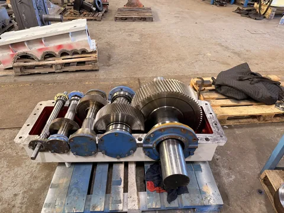
28 / Gear train installed Multiple gears, shafts and bearings installed in the lower housing before closure. 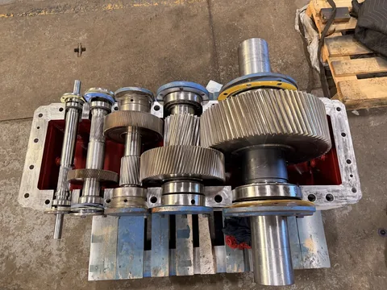
29 / Internal assembly overview Alternate overview of the installed gear train and bearing locations. 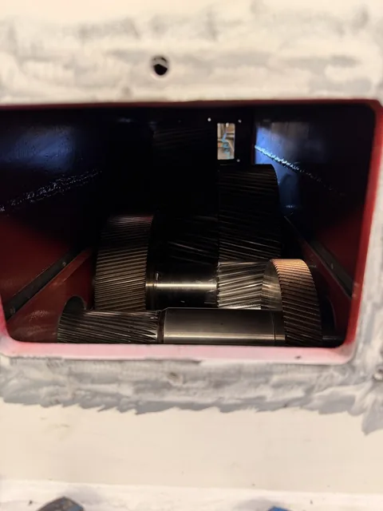
30 / Inspection opening Internal gearing viewed through the housing inspection opening. 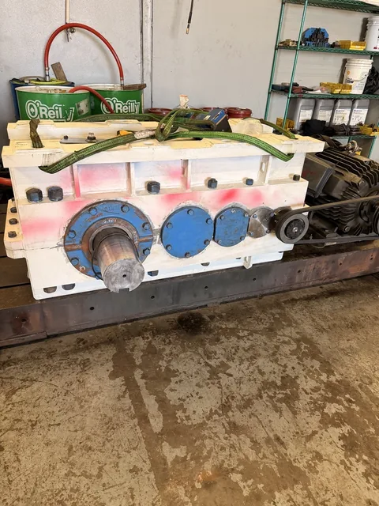
31 / Closed gearbox on shop setup Closed gearbox positioned on a shop setup. Additional gearbox examples Separate open-housing and assembled gearbox examples. These are not a matched before-and-after pair.
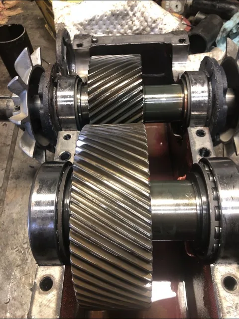
32 / Open helical gearbox Two helical gears with shafts and bearings installed in an open housing; external cooling fans are visible. 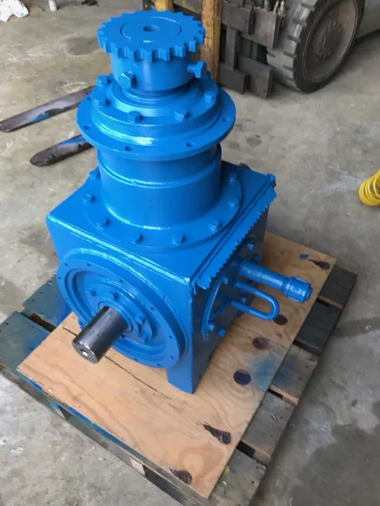
33 / Blue-painted assembled gearbox Assembled gearbox on a pallet, with a projecting shaft and top-mounted sprocket.